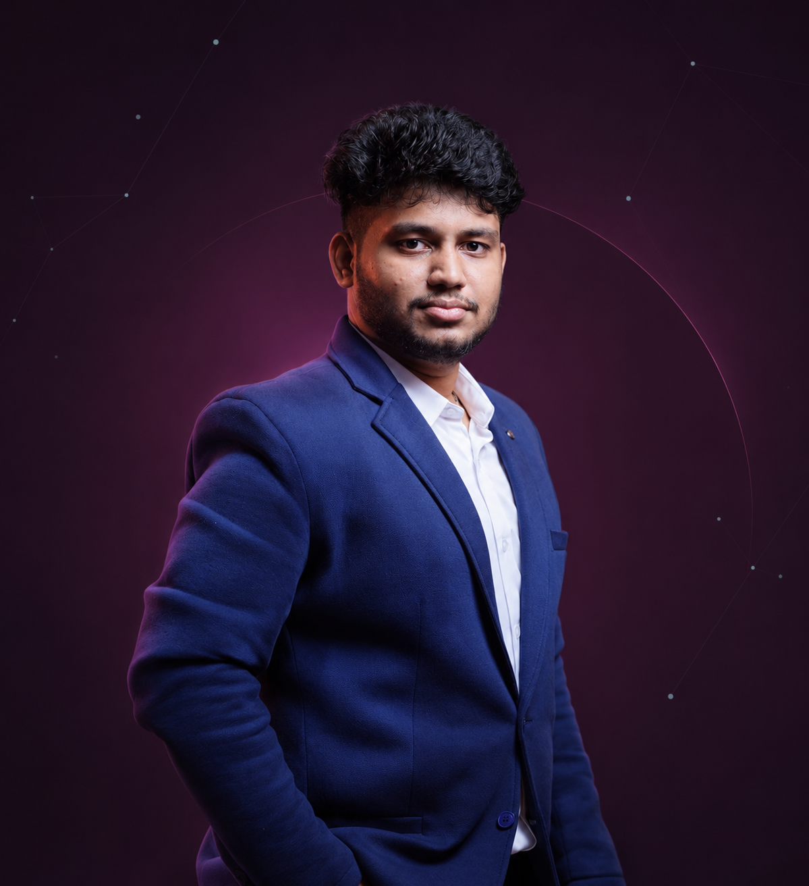

01 / GENERATIVE AIModels that createLLMs · multimodal systems · applied workflows
AI/ML Engineer · DevOps · Full-Stack Developer
ABDULLATHIEF.
MACHINE LEARNING · COMPUTER VISION · AI DEPLOYMENT
I take AI from use case to production—building computer-vision and machine-learning systems for real environments.
LEARN / BUILD / DEPLOY / IMPACT

APPLIED AI ENGINEERINGFrom model to production
FOCUSGenAI · Vision · Deployment
SCROLL TO EXPLORE↓GENERATIVE AI · COMPUTER VISION · DEPLOYMENT
7.82 CGPA7 Certifications3 AwardsFull-Stack DeveloperDevOpsAI/ML Engineer7.82 CGPA7 Certifications3 AwardsFull-Stack DeveloperDevOpsAI/ML Engineer
01 A LITTLE ABOUT ME
I like building things
that make intelligence
useful.
I’m Abdul, an AI/ML Engineer working across Generative AI, large language models, computer vision, and deployment. My experience spans the full path from data and model validation to production systems running in client environments.
My earlier work in technical engineering, DevOps, and full-stack development helps me connect the model to the infrastructure and the people who rely on it.
More about my journey ↗AI → LIVEFrom use case to deployment
VISION + DATAModels grounded in real environments
BUILD × OPERATEEngineering beyond the prototype
PERSONRTSP FEED · ZONE A
02 / COMPUTER VISIONConnected camera intelligenceCCTV integration · detection zones · validation
AI
AGENTPLANSEARCHRESPONDTOOLS CONNECTED ●
03 / AI AGENTSTools, context, actionsAgent workflows · API connections · orchestration
02 APPLIED AI & ENGINEERING
AI in the real world.
Production deployment, computer vision, and machine-learning projects—plus selected full-stack work.
PROJECT DETAILS ARE BASED ON THE INFORMATION SHARED ON MY PROFILE.
03 WHERE I’VE WORKED
Experience in
the field.
From building web interfaces to deploying AI systems in real client environments.
CAREER / TIMELINE2026 · AI/ML and Deployment Engineer
JUL 2026 — NOW
AI/ML and Deployment Engineer
CURRENTParalaxiom Technologies Private Limited · Full-time · Remote
Develop and deploy Generative AI, LLM, and computer vision solutions for enterprise applications. Integrate AI modules with CCTV systems over RTSP, configure detection zones, validate model performance, and support Linux and containerized production deployments.
DEC 2025 — JUN 2026
Technical Engineer
Tango Eye · Full-time · On-site · Chennai
Supported AI application deployment, model training and validation, CCTV/RTSP integration, Linux and Docker operations, monitoring, troubleshooting, and DevOps workflows.
AUG 2024 — SEP 2025
Full-stack Developer
Keydraft · Internship · On-site · Chennai
Worked on responsive interfaces and reusable UI components, translating Figma layouts into production-ready screens and writing maintainable code with modern build and version control workflows.
MAR 2023 — JUL 2024
Frontend Developer
High On Code · Freelance · Chennai
Frontend development experience alongside freelance work. Additional role details were not included in the profile information shared.
JUN 2022 — JUL 2022
Web Developer
Adventure Technology Solutions Pvt Ltd · Internship · On-site · Chennai
Web development internship focused on front-end development and visual web development.
04 TOOLKIT
Curious by nature.
Hands-on by default.
A broad working toolkit built through projects, internships, and production deployment experience.
AI & Machine Learning
Generative AI · LLMs · Machine Learning · NLP · AI use case development · Model fine-tuning · Training · Evaluation · Validation · Testing · Data annotation
Computer Vision & Deployment
Computer vision · AI video analytics · AI-powered surveillance · CCTV integration · RTSP / video streaming · Detection zones · Model deployment · Application support
Engineering & Operations
Python · Linux / Ubuntu · Docker · Git / GitHub / GitLab · CI/CD · Server administration · Monitoring · Troubleshooting · REST APIs · Cron · htop · NVIDIA-SMI
Web & Product
JavaScript · React.js · Node.js · HTML · CSS · SQL · Firebase · Database development · Front-end development · Figma · UI/UX · Canva
Data & Analytics
Data analysis · Microsoft Excel · Power BI · Tableau · Data visualization · Python data tools · Machine learning and deep learning foundations
How I work
Communication · Leadership · Technical leadership · Creative problem solving · Teamwork · Event management · Software project management
05 ACHIEVEMENTS & EDUCATION
Built on a strong
learning habit.
Formal education, focused courses, and opportunities to lead and contribute.
EDUCATION
B.E. Computer Science and Engineering
PERI Institute of Technology · Grade 7.82
Student President · Technical & Cultural Event Organizer · Paper Presentation Participant · Technical Symposium Organizer · Volunteer · Master of Ceremonies · Kabbadi
Higher Secondary · Computer Science
Padma Subramaniyan Bala Bhavan · 63%
Secondary Education
Vivekananda Vidhyalaya · 62%
CERTIFICATIONS & COURSES
Data Analytics
NoviTech R&D Pvt Ltd · Expires Jul 2035
UI/UX Designing · DevOps · JavaScript
Simplilearn · GUVI
Cloud Core
IBM
More coursework
Artificial Intelligence · Data Science Using Python · Full Stack Developer · Introduction to Cloud · UI & UX Designing Using Figma · Web Development Basics
AWARDS
Adroit Student — recognized for student leadership and large-scale event organization, including TRAJI TECH (600+ participants) and a college cultural fest (3,000+ participants).
First Prize, Paper Presentation — interdepartmental competition; profile also notes first among 60 participants.
Paper Warz — first prize among 20 presentations.
LANGUAGESEnglish FULL PROFESSIONALTamil FULL PROFESSIONALHindi NATIVE / BILINGUALUrdu NATIVE / BILINGUAL
06 HAVE A GOOD ONE IN MIND?
Let’s build
something useful.
Interested in AI/ML engineering, computer vision, deployment, or full-stack opportunities? I’d be glad to connect.
A/L